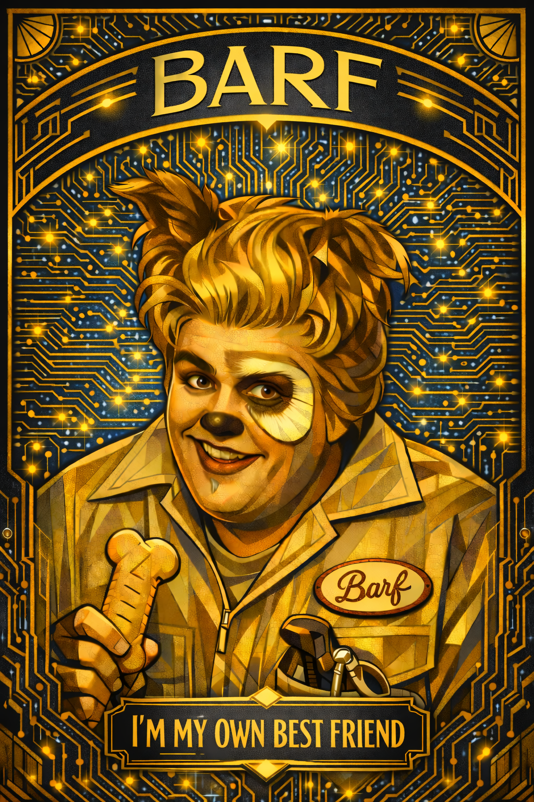

barf
AI Issue Orchestration
An autonomous system that manages Claude AI agents to plan, build, and verify software — issue by issue, from triage to completion.

AI agents are powerful.
Managing them is hard.
- Context windows overflow mid-task — work is lost
- No structured lifecycle — issues drift without state tracking
- Manual prompting per phase: plan, build, test, verify
- No visibility into what the agent is actually doing
- No automated quality gate — you review everything yourself
barf treats AI work like a managed pipeline — with state machines, overflow recovery, verification loops, and real-time observability.
The Ralph pattern
Geoffrey Huntley's Ralph is a beautifully simple idea: a bash loop that feeds a prompt to Claude, completes one task, commits, and restarts with fresh context.
claude --prompt PROMPT.md
# reads IMPLEMENTATION_PLAN.md
# does one task, commits, exits
done
"I'm helping!"
Each iteration = one fresh context = one task = one commit. The IMPLEMENTATION_PLAN.md file acts as shared state between isolated executions — keeping the agent in the "smart zone" of its context window.
barf builds on Ralph
barf takes Ralph's core insight — fresh context per task — and adds structured orchestration on top:
The autonomous
pipeline
Click Auto and barf drives every open issue through five stages. All output streams in real-time via SSE.
build, lint, test. Failures create fix sub-issues and retry automatically.A state machine drives everything
Every issue is a markdown file with frontmatter tracking its state. Transitions are validated — no skipping steps, no invalid moves.
- NEW — created, awaiting triage evaluation
- GROOMED — requirements clear, ready for planning
- PLANNED — plan written, stays here during build
- BUILT — agent finished, awaiting verification
- COMPLETE — build + lint + tests all pass

Context overflow? Auto-split.
barf monitors token usage in real-time. When Claude approaches the context limit, barf doesn't just fail — it recovers automatically:
1. Detect
Stream consumer counts input tokens from main-context messages only (sub-agent tokens excluded). Threshold is configurable per-issue via context_usage_percent.
2. Interrupt
When tokens exceed the threshold, barf calls q.interrupt() on the SDK query and throws ContextOverflowError.
3a. Split
If splits available: runs a split prompt, Claude decomposes the issue into smaller child issues, then plans each child automatically.
3b. Escalate
If MAX_AUTO_SPLITS exhausted: switches to EXTENDED_CONTEXT_MODEL (a larger model) and continues with more headroom.
This mirrors how a human developer handles scope creep: "This is too big — let me break it down into smaller tasks."
Verify with code,
audit with AI
Verification loop
When Claude marks an issue BUILT, barf automatically runs:
bun run build— does it compile?bun run check— lint + format pass?bun test— all tests green?
If any fail, barf creates a fix sub-issue with the error output and launches another agent to fix it. Retries up to N times.
Cross-provider audit
After COMPLETE, a different AI reviews Claude's code — catching blind spots that the builder might miss.
Selected via AUDIT_PROVIDER in .barfrc.
Each extends a pluggable AuditProvider base class.
Harness engineering
In February 2026, OpenAI's Codex team coined harness engineering — the discipline of designing constraints, feedback loops, and environments that make AI agents reliable.
The metaphor: the model is the horse (powerful but directionless), the harness provides structure, and the human is the rider.
Four principles
barf was doing this first
barf implemented every harness principle before the term existed:
settingSources: [].
"The model is commodity. The harness is moat."
— OpenAI Codex team, Feb 2026
Auto or manual — your call
Auto mode
Click Auto and walk away. barf drives every open issue through the full pipeline — triage, plan, build, verify, audit — without intervention.
- Picks up the next actionable issue automatically
- Handles overflow, splits, and retries on its own
- Ideal for batch processing a backlog overnight
Manual mode
Run one stage at a time. Inspect, edit, and retry at each step — full human-in-the-loop control.
Each button on the dashboard maps to one stage — run them in any order, retry as many times as you want.
Real-time observability
- Kanban board — drag issues between states, see the full pipeline at a glance
- Activity log — every Claude message streamed live via SSE with token counts
- Issue detail — acceptance criteria, interview Q&A, state progress bar, stage log
- Stats panel — session history, token usage charts, duration tracking
- Prompt editor — live-edit prompt templates without restarting
- Config panel — model selection, audit gate, thresholds

Three steps to
autonomous dev
barf /path/to/project— starts the dashboard on :3333- Create issues as markdown files with acceptance criteria
- Click Auto — barf triages, plans, builds, verifies, and audits
Issues are git-trackable markdown. No database. No migrations.
Works with local files or GitHub Issues. Configure via .barfrc.
Built with Bun, TypeScript strict mode, Zod schemas, and 913 tests across 68 files.
Let AI agents ship — you steer.